Spring Boot 주식 거래 API 기능 추가 개발
JPA + SQL Mapper 병행 · 분석 API · Validation · AOP · Actuator 리포트
./gradlew bootRun 으로 직접 기동한 뒤 Swagger UI Try it out / Actuator 엔드포인트로 실행한 실제 결과입니다.| 구분 | 시작 시점 상태 |
|---|---|
| 구현되어 있던 API | POST /api/users, GET /api/users/{id}, POST /api/stocks, GET /api/stocks/{id}, GET /api/stocks, GET /api/transactions/user/{userId}, GET /api/portfolios/user/{userId} — 총 7개 |
| 엔티티 / 리포지토리 | User, Stock, Portfolio, Transaction, TradeAuditLog 5종과 JPA Repository 5종은 준비되어 있었음 (호출하는 곳이 없는 메서드 다수) |
| 비어 있던 클래스 | StockMapper(인터페이스/XML), StockAnalysisService, StockAnalysisController — 전부 주석만 남아 있었음 |
| 제거되어 있던 로직 | TransactionService.executeTrade()(매매 실행)와 PortfolioService의 포트폴리오 증감 메서드 3종 |
| 설정 | MyBatis 의존성과 mapper-locations 설정은 있었으나 실제 SQL은 0건. Actuator/AOP 의존성 없음 |
| 초기 데이터 | data.sql에 사용자 3명, 주식 5건 |
즉, 이번 실습은 동작하는 코드에 기능을 덧붙이는 것이 아니라 매매 로직·분석 계층·SQL Mapper를 처음부터 다시 구현하는 작업이었습니다.
구현을 마친 뒤 등록된 전체 API입니다. 시작 시점 7개에서 28개로 늘었습니다.
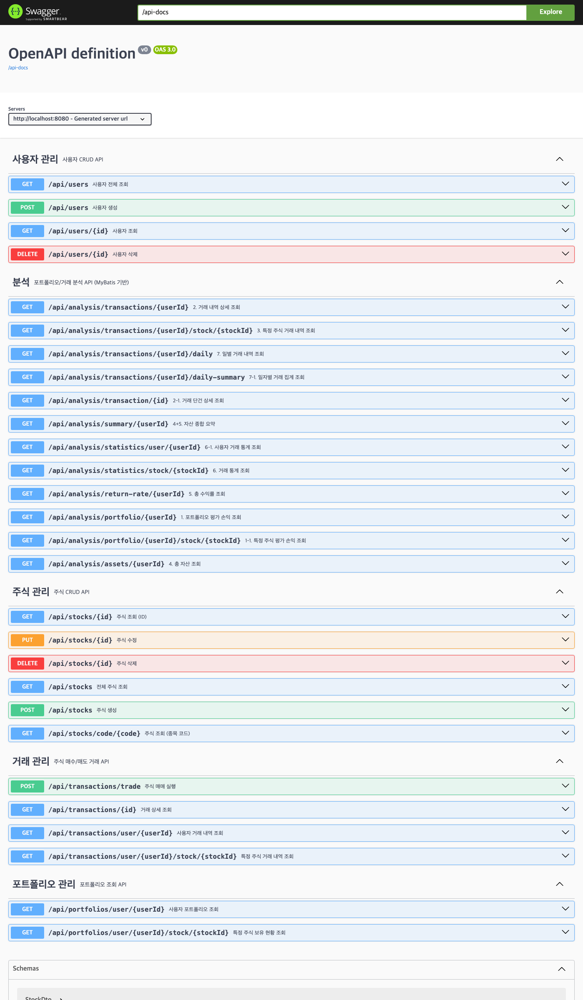
| # | 과제 | API | 구현 내용 |
|---|---|---|---|
| 1 | User 삭제 | DELETE /api/users/{id} | UserService.deleteUser — portfolios/transactions가 users를 FK로 참조하므로 자식 데이터를 먼저 정리한 뒤 삭제. 세 번의 삭제를 하나의 @Transactional로 묶음 |
| 2 | User 전체 조회 | GET /api/users | UserService.getAllUsers — findAll() 결과를 DTO로 변환 |
| 3 | Stock 수정 | PUT /api/stocks/{id} | StockService.updateStock — 코드 변경 시 중복 검증. previousPrice를 생략하고 현재가만 바꾸면 기존 현재가를 전일 종가로 자동 이월 |
| 4 | Stock 삭제 | DELETE /api/stocks/{id} | StockService.deleteStock — 보유자나 거래 이력이 있으면 400으로 차단, 없을 때만 삭제 후 204 |
| 5 | Stock 코드 조회 | GET /api/stocks/code/{code} | StockRepository.findByCode 활용, 없으면 404 |
| 6 | Transaction 상세 조회 (Read-Only) | GET /api/transactions/{id} | @Transactional(readOnly = true) 명시 — 조회 전용이라 불필요한 더티 체킹을 막음 |
| 7 | 주식 매매 실행 | POST /api/transactions/trade | TransactionService.executeTrade — 수량/잔액/보유 수량 검증 → 잔액 증감 → 포트폴리오 갱신(평균 매수가 재계산) → 거래 이력 저장을 한 트랜잭션으로 처리 |
| 8 | Portfolio 특정 주식 | GET /api/portfolios/user/{userId}/stock/{stockId} | PortfolioService.getPortfolio — 보유 수량·평균 매수가·평가 손익까지 계산해 반환 |
| + | Transaction 특정 주식 거래 내역 | GET /api/transactions/user/{userId}/stock/{stockId} | 분석 항목 8번을 JPA로도 구현 |
POST /api/transactions/trade매수는 잔액 < 총액이면 즉시 차단하고, 이미 보유 중인 종목이면 평균 매수가를 재계산합니다. 매도는 보유 수량을 확인한 뒤 잔량이 0이 되면 포트폴리오에서 제거합니다. 이 과정이 하나라도 실패하면 잔액만 깎이고 거래는 기록되지 않는 상태가 생기므로 전부 한 트랜잭션으로 묶었습니다.
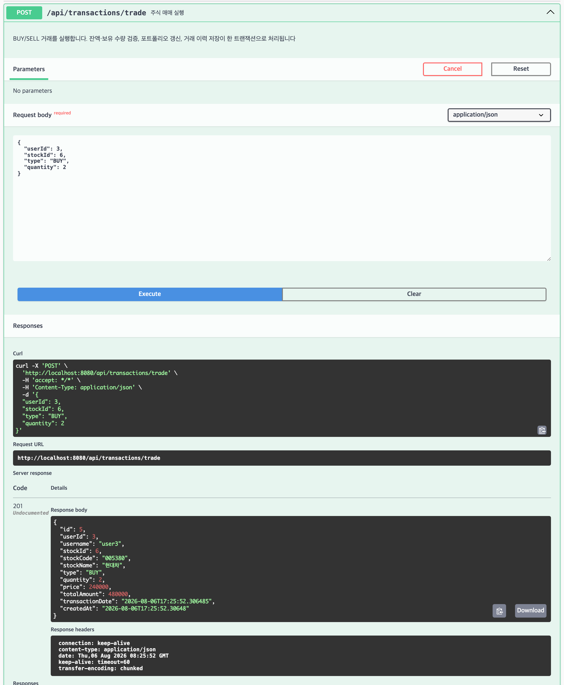
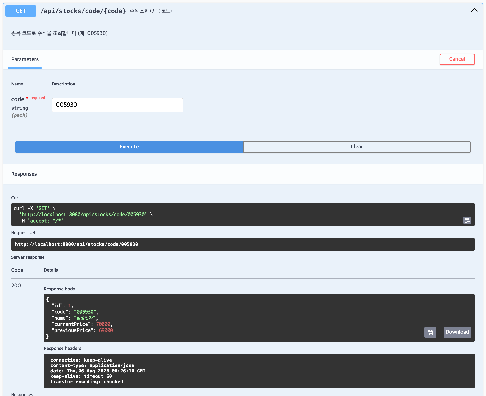
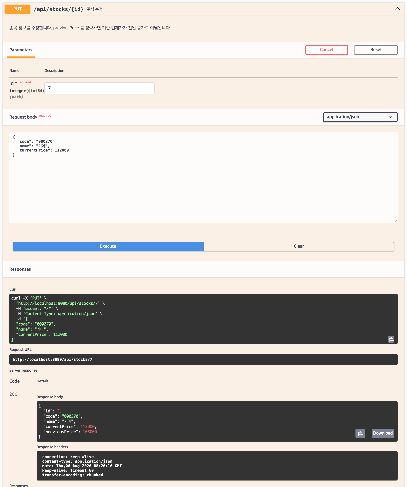
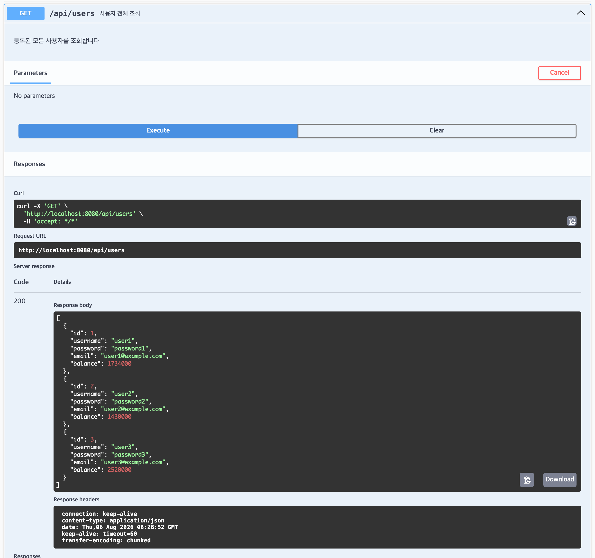
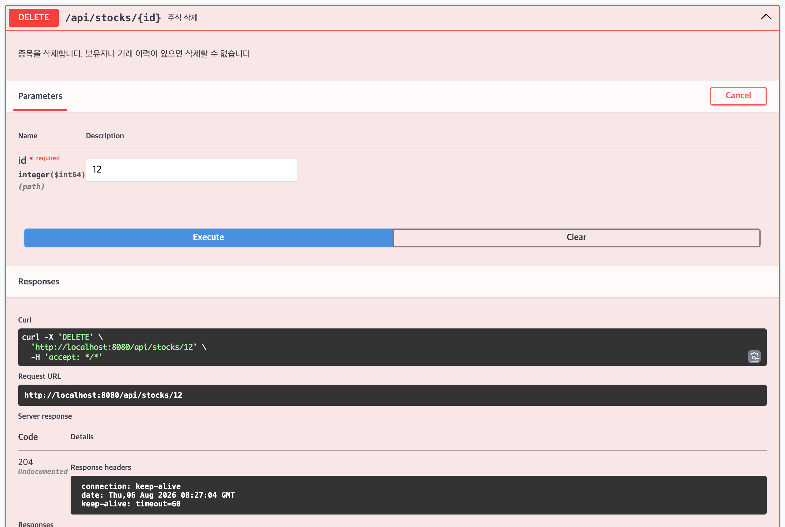
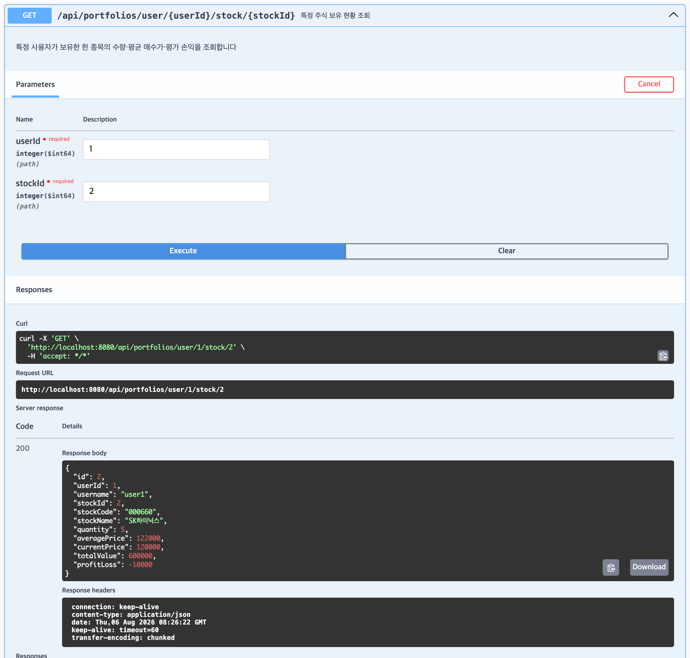
| # | 요구 항목 | API | 구현 방식 |
|---|---|---|---|
| 1 | 포트폴리오 평가 손익 조회 | GET /api/analysis/portfolio/{userId} | MyBatis — portfolios ⋈ users ⋈ stocks 조인, 평가금액/평가손익을 SQL에서 계산 |
| 2 | 거래 내역 상세 조회 | GET /api/analysis/transactions/{userId} | MyBatis — 사용자명·종목명까지 한 번에 조인 (지연 로딩 N+1 회피) |
| 3 | 특정 주식 거래 내역 조회 | GET /api/analysis/transactions/{userId}/stock/{stockId} | MyBatis |
| 4 | 총 자산 조회 | GET /api/analysis/assets/{userId} | MyBatis — 보유 현금 + Σ(수량 × 현재가). LEFT JOIN + COALESCE로 보유 종목이 없어도 조회 가능 |
| 5 | 총 수익률 조회 | GET /api/analysis/return-rate/{userId} | MyBatis — (평가금액 − 매수원금) ÷ 매수원금 × 100 |
| 6 | 거래 통계 조회 | GET /api/analysis/statistics/stock/{stockId} | MyBatis — SUM(CASE WHEN type='BUY' ...)로 매수/매도/순매수를 한 쿼리에 집계 |
| 7 | 일별 거래 내역 조회 | GET /api/analysis/transactions/{userId}/daily?date= | MyBatis — CAST(transaction_date AS DATE) 비교, 날짜 생략 시 오늘 |
| 8 | Transaction 특정 주식 거래 내역 | GET /api/transactions/user/{userId}/stock/{stockId} | JPA — 같은 요구사항을 SQL Mapper 버전(3번)과 비교할 수 있도록 두 방식 모두 구현 |
| 확장 | API | 추가한 이유 |
|---|---|---|
| 특정 주식 평가 손익 | GET /api/analysis/portfolio/{userId}/stock/{stockId} | 전체 목록에서 한 종목만 골라 보는 요청이 잦을 것으로 판단 |
| 거래 단건 상세 (조인) | GET /api/analysis/transaction/{id} | JPA 버전과 SQL 조인 버전의 응답 비교 |
| 자산 종합 요약 | GET /api/analysis/summary/{userId} | 총자산·매수원금·평가손익·수익률을 한 번에 — AOP 감사 로그의 스냅샷도 이 값을 사용 |
| 사용자 종목별 거래 통계 | GET /api/analysis/statistics/user/{userId} | 6번은 종목 기준이라, 사용자 기준 통계를 별도로 추가 |
| 일자별 거래 집계 | GET /api/analysis/transactions/{userId}/daily-summary | 7번은 특정 하루만 조회 가능해서, 날짜별 매수/매도 건수·금액을 GROUP BY로 집계 |
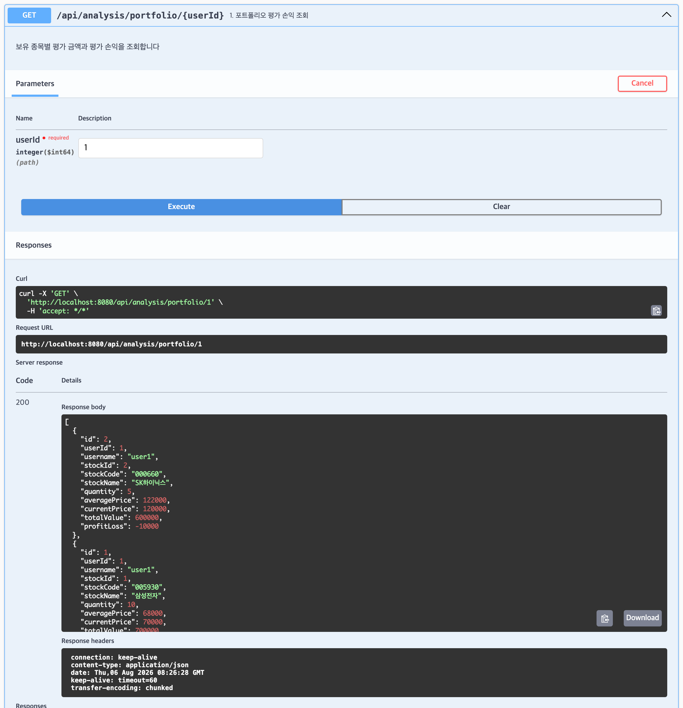
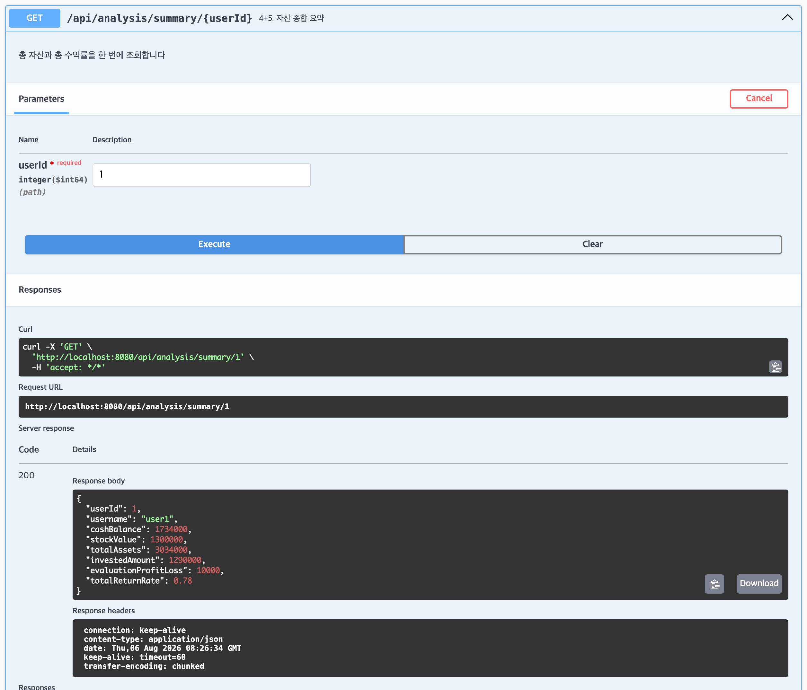
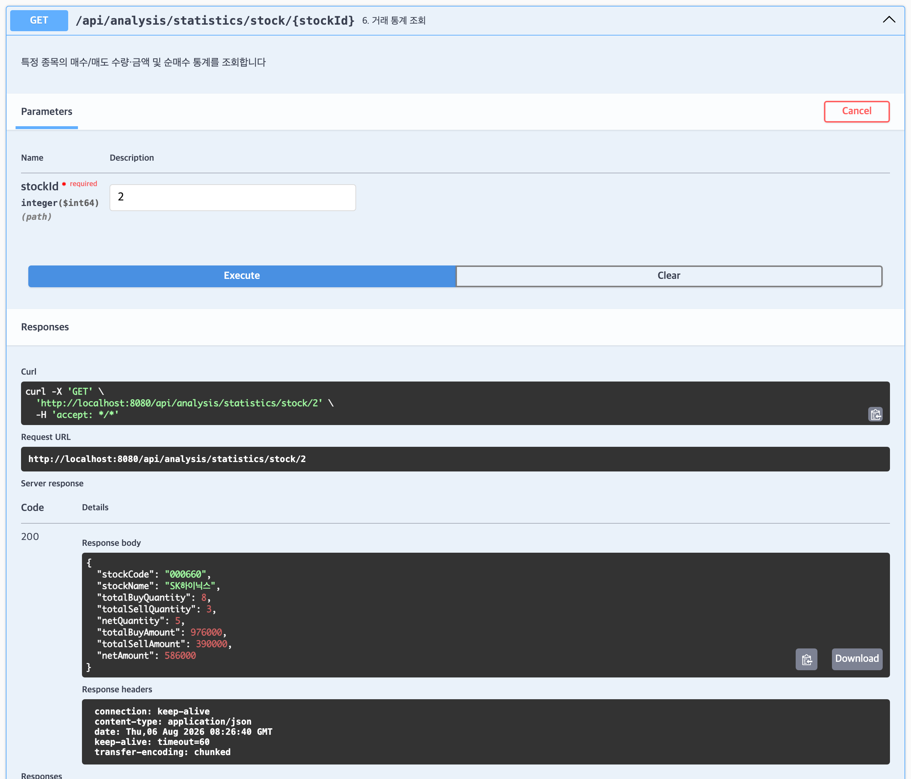
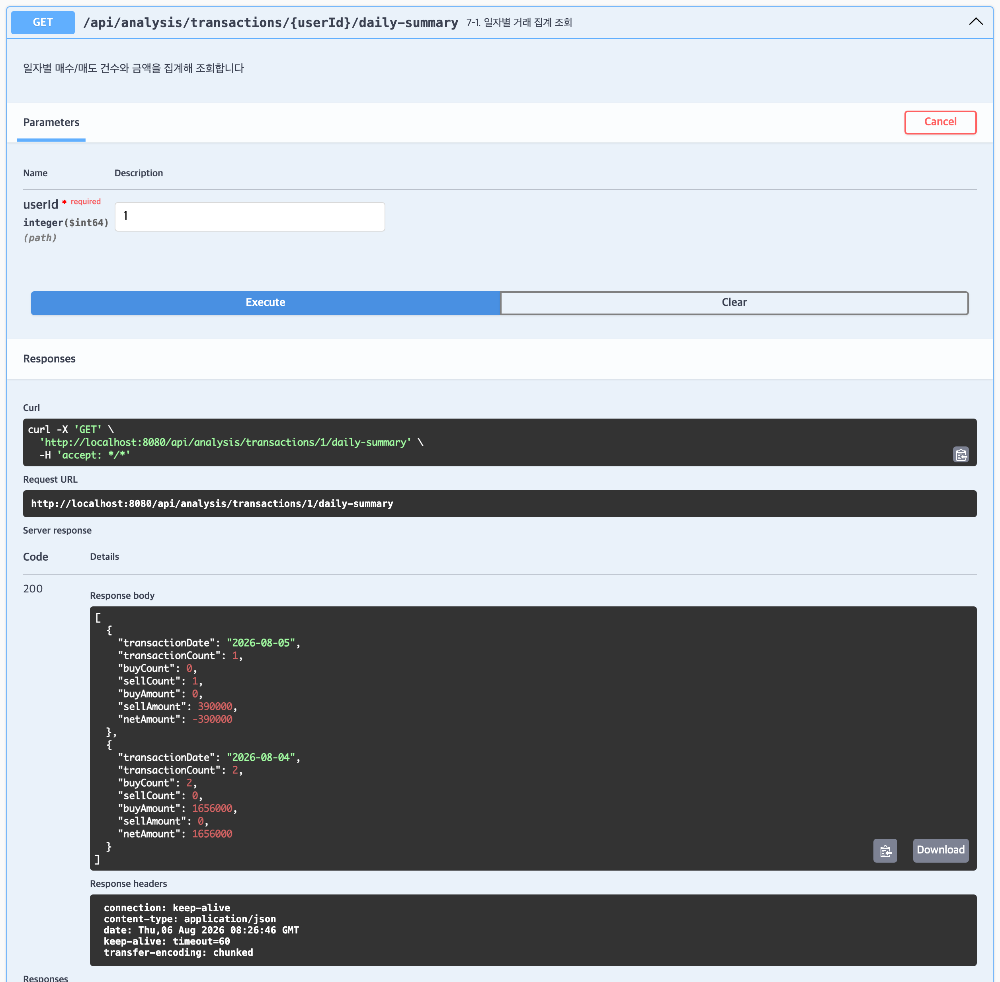
총자산 = 현금 + 평가금액이 실제로 검산되도록 했습니다.
두 기술을 무작정 섞지 않고, "쓰기·단건은 JPA, 조인·집계는 MyBatis"라는 기준을 정해서 나눴습니다.
| 계층 | 기술 | 선택 이유 |
|---|---|---|
| CRUD (User / Stock / Portfolio / Transaction) | JPA (Spring Data JPA) | 단일 애그리거트 단위의 생성·수정·삭제. 변경감지(dirty checking)와 영속성 컨텍스트, 트랜잭션 롤백의 이점을 그대로 활용 |
| 분석/집계 조회 ( /api/analysis/**) | MyBatis (SQL Mapper) | 3~4개 테이블 조인 + SUM/CASE WHEN/GROUP BY 집계. JPQL로 표현하면 오히려 복잡해지고, 지연 로딩으로 N+1 쿼리가 발생하기 쉬움 |
SQL은 resources/mapper/StockMapper.xml에 11개 쿼리로, 인터페이스는 com.skala.stock.mapper.StockMapper에 두었습니다. 조인 컬럼 목록이 4개 쿼리에서 반복돼서 <sql> 조각으로 묶어 재사용했습니다.
<!-- 반복되는 조인 컬럼을 조각으로 분리 -->
<sql id="transactionDetailColumns">
t.id, t.user_id AS userId, u.username, t.stock_id AS stockId,
s.code AS stockCode, s.name AS stockName, t.type, t.quantity,
t.price, t.total_amount AS totalAmount, t.transaction_date AS transactionDate,
t.created_at AS createdAt
</sql>
<select id="findTransactionsWithDetails" resultType="...dto.TransactionDto">
SELECT <include refid="transactionDetailColumns"/>
FROM transactions t
INNER JOIN users u ON t.user_id = u.id
INNER JOIN stocks s ON t.stock_id = s.id
WHERE t.user_id = #{userId}
ORDER BY t.transaction_date DESC, t.id DESC
</select>
@NotNull, @NotBlank, @Size, @Email)을 신규 API에 @Valid로 적용하고, 검증 실패 응답 형식을 개선기존 코드는 검증에 실패해도 스프링 기본 오류 형식만 돌려줘서 어떤 필드가 왜 잘못됐는지 알 수 없었습니다. @RestControllerAdvice에서 MethodArgumentNotValidException을 잡아 fieldErrors에 필드별 한글 메시지를 담도록 했습니다.
// TradeRequestDto @NotNull(message = "사용자 ID는 필수입니다") private Long userId; @NotNull(message = "주식 ID는 필수입니다") private Long stockId; @NotNull(message = "거래 유형은 필수입니다") private Transaction.TransactionType type; @NotNull(message = "거래 수량은 필수입니다") private Long quantity;
| 예외 | 상태 | 사용처 |
|---|---|---|
MethodArgumentNotValidException | 400 | Bean Validation 실패 → fieldErrors에 필드별 메시지 |
BusinessException | 400 | 잔액 부족, 보유 수량 부족, 중복 종목 코드, 참조 중인 종목 삭제 |
ResourceNotFoundException | 404 | 없는 사용자/종목/거래 조회 |
모든 오류 응답은 timestamp · status · error · message · path를 갖는 동일한 형식(ErrorResponse)으로 통일했습니다.
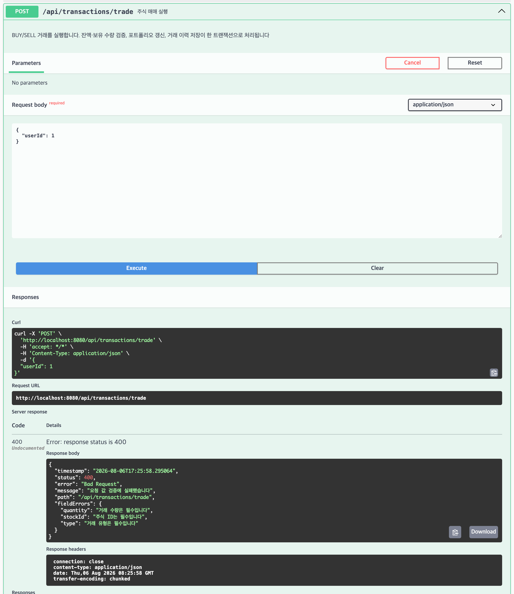
{"userId": 1}) 매매를 요청한 결과 — 400 Bad Request와 함께 fieldErrors에 quantity/stockId/type 세 필드의 사유가 각각 표시됨"공통으로 반복되지만 비즈니스 로직의 본질이 아닌 것"을 기준으로 두 가지를 찾아 Aspect로 분리했습니다.
컨트롤러·서비스 전 메서드에 @Around로 걸어 실행 시간을 남깁니다. 모든 메서드에 시간 측정 코드를 복붙하는 대신 Aspect 하나로 처리했고, 200ms를 넘으면 WARN, 예외가 나면 [FAIL]로 구분합니다. 아래는 위 Swagger 호출들이 남긴 실제 로그입니다.
c.skala.stock.aop.ExecutionTimeAspect : [TIME] TransactionService.executeTrade - 42ms c.skala.stock.aop.ExecutionTimeAspect : [TIME] TradeAuditService.record - 28ms c.skala.stock.aop.TradeAuditAspect : 거래 감사 로그 기록: userId=3, [성공] BUY 2주 @240000 = 480000원 (거래 ID: 5) c.skala.stock.aop.ExecutionTimeAspect : [TIME] TransactionController.executeTrade - 77ms c.skala.stock.aop.ExecutionTimeAspect : [FAIL] TransactionService.executeTrade - 7ms (BusinessException: 보유 수량이 부족합니다. 보유 수량: 0, 매도 수량: 999) c.skala.stock.aop.ExecutionTimeAspect : [TIME] TradeAuditService.record - 3ms c.skala.stock.aop.TradeAuditAspect : 거래 실패 감사 로그 기록: userId=3, [실패] SELL 999주 - 보유 수량이 부족합니다. c.skala.stock.aop.ExecutionTimeAspect : [FAIL] TransactionController.executeTrade - 12ms (BusinessException: ...) c.skala.stock.aop.ExecutionTimeAspect : [TIME] StockService.getStockByCode - 7ms c.skala.stock.aop.ExecutionTimeAspect : [TIME] UserService.deleteUser - 13ms c.skala.stock.aop.ExecutionTimeAspect : [TIME] StockService.deleteStock - 7ms
매매 성공/실패 기록은 매매 로직의 본질이 아니라서 Aspect로 분리했습니다. TransactionService.executeTrade()는 감사 로그의 존재를 전혀 모릅니다. 구현하면서 두 가지를 신경 썼습니다.
| 고민한 지점 | 해결 |
|---|---|
| AOP 실행 순서 — 감사 로그에 "거래 후 자산"을 남기려는데, 트랜잭션 AOP 안쪽에서 실행되면 아직 커밋되지 않아 이전 값이 조회됨 | @Order(Ordered.HIGHEST_PRECEDENCE)로 트랜잭션 AOP(기본 LOWEST_PRECEDENCE)보다 바깥에서 실행 → @AfterReturning 시점에는 커밋이 끝나 있어 정확한 스냅샷을 읽음 |
| 실패 기록의 소실 — 거래가 실패하면 트랜잭션이 롤백되므로, 같은 트랜잭션에 감사 로그를 쓰면 "왜 실패했는지"도 함께 사라짐 | TradeAuditService.record()에 @Transactional(propagation = REQUIRES_NEW)를 걸어 별도 트랜잭션으로 기록 → 거래는 롤백돼도 실패 사유는 남음 |
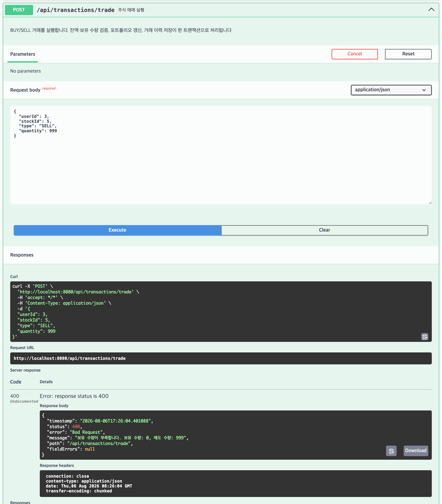
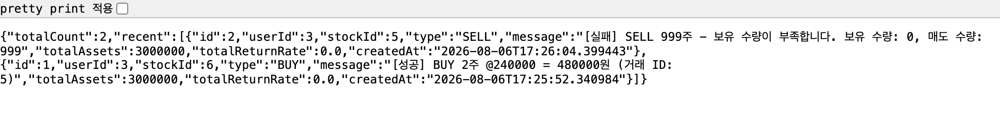
/actuator/tradeaudit — AOP가 남긴 감사 로그 2건. 롤백된 실패 거래(id=2)도 사유와 함께 남아 있는 것이 REQUIRES_NEW의 효과이며, 성공 거래(id=1)에는 거래 직후 총자산 3,000,000원이 함께 기록됨spring-boot-starter-actuator를 추가해 엔드포인트를 노출한 뒤, 기본 기능만 켜고 끝내지 않고 이 프로젝트에 맞는 커스텀 지표 3가지를 직접 만들었습니다.
| 엔드포인트 | 구분 | 내용 |
|---|---|---|
/actuator/health | 기본 + 커스텀 | DB/디스크에 더해 StockMarketHealthIndicator 추가 — DB 커넥션이 살아 있어도 등록된 종목이 0건이면 매매가 불가능하므로 DOWN으로 판정 |
/actuator/metrics/stock.trade.count | 커스텀 메트릭 | AOP에서 올리는 매매 성공/실패 카운터 (result 태그로 구분) |
/actuator/tradeaudit | 커스텀 엔드포인트 | @Endpoint(id="tradeaudit") — AOP가 남긴 감사 로그 최근 20건. 업무 API가 아니라 운영 정보라서 /api/**가 아닌 actuator 아래에 배치 |
/actuator/httpexchanges | 기본 | InMemoryHttpExchangeRepository 빈을 등록해야 노출된다는 점을 확인해 ActuatorConfig에 추가 |
/actuator/info, env, beans, mappings, loggers | 기본 | 앱 메타 정보 및 런타임 설정 확인용 |
env/beans는 내부 설정이 그대로 드러나므로 운영에서는 인증 뒤에 두어야 한다는 점을 설정 파일에 주석으로 남겼습니다.
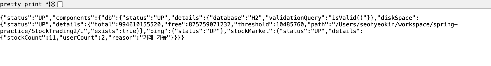
stockMarket 컴포넌트가 UP으로 표시됨. 앞의 삭제 API 실행 뒤에 호출해서 종목 11건·사용자 2명으로 실시간 집계된 값이 보임(초기값 12건·3명)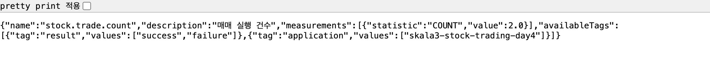
| 항목 | Before | After |
|---|---|---|
| ① AOP 순서로 인한 잘못된 감사 금액 (실험으로 확인) |
@Order 없이 Aspect를 두면 트랜잭션 AOP 안쪽에서 실행됨. 실제로 @Order를 뺀 채 매수를 실행해보니, 감사 로그에 거래 전 수익률 0.78%가 기록됨(정답은 0.67%) |
@Order(HIGHEST_PRECEDENCE) 부여 후 같은 거래를 재현하니 커밋 후 값 0.67%가 정확히 기록되는 것을 확인 |
| ② H2가 지원하지 않는 날짜 함수 (테스트로 고정) |
일별 거래 조회에 흔히 쓰는 DATE(transaction_date)를 사용하면 H2에서 BadSqlGrammarException이 발생해 조회 자체가 실패 |
표준 SQL CAST(transaction_date AS DATE)로 변경. 이 사실을 SqlDialectCheckTest로 고정해, 나중에 쿼리를 고칠 때 같은 실수를 반복하지 않도록 함 |
| ③ 수익률 계산의 이식성 | 정수 컬럼끼리 나누는 형태((평가금액−원금)/원금)는 DB에 따라 정수 나눗셈으로 처리되어 1% 미만 수익률이 0으로 잘릴 수 있음 |
나누기 전에 CAST(... AS DOUBLE)로 명시 캐스팅하고, 소수점 둘째 자리까지 나오는지 테스트로 검증 |
| ④ 예외 체계 정리 | 기존 코드가 없는 데이터 조회·중복 등록·잔액 부족을 전부 RuntimeException 하나로 던져서, 클라이언트가 "없는 데이터"와 "규칙 위반"을 구분할 수 없었음 |
ResourceNotFoundException(404) / BusinessException(400)으로 분리하고, 검증 실패는 fieldErrors까지 담은 일관된 형식으로 응답 |
| ⑤ 참조 무결성 방어 | Stock 삭제 시 보유자·거래 이력을 확인하지 않으면 FK 제약으로 500이 발생. User 삭제도 자식 데이터 때문에 실패 | Stock은 참조가 있으면 사유와 함께 400으로 차단, User는 자식 데이터를 먼저 정리한 뒤 삭제하도록 한 트랜잭션으로 처리 |
| ⑥ 통합 테스트 작성 | 과제에 테스트 요구는 없었지만, 수동 호출만으로는 회귀를 잡을 수 없음 | MockMvc 통합 테스트 10건 작성 — 특히 "매도 실패로 롤백돼도 감사 로그는 남는가"를 자동으로 검증 |
user1이 카카오 4주(200,000원)를 매수하면, 매수 직후 실제 수익률은 0.67%(매수원금 1,490,000 / 평가금액 1,500,000)입니다. 매수 직전 값은 0.78%였습니다.
# 매수 직후 실제 수익률 (정답)
GET /api/analysis/return-rate/1 → {"totalReturnRate":0.67,"investedAmount":1490000}
# @Order 제거 후 매수 → 감사 로그 {"totalReturnRate":0.78} <-- 커밋 전 값(오답)
# @Order(HIGHEST_PRECEDENCE) 복구 → 감사 로그 {"totalReturnRate":0.67} <-- 커밋 후 값(정답)
@Order를 빼고 넣어가며 재현해 원인을 확인했고, 나머지 항목도 같은 방식으로 확인한 뒤 조치했습니다.
$ ./gradlew bootRun # http://localhost:8080 (Swagger: /swagger-ui.html) $ ./gradlew test # 통합 테스트 10건 → BUILD SUCCESSFUL
| 테스트 | 검증 내용 |
|---|---|
| 초기 데이터 적재 | 사용자 3명, 종목 12건(요구사항 10건 이상 충족) |
| 종목 코드 조회 | 정상 조회 200 / 없는 코드 404 |
| 매수 반영 | 매수 후 포트폴리오에 수량·평균 매수가가 정확히 반영 |
| 매도 실패 시 감사 로그 | 보유 수량 초과 매도 → 400 + 거래는 롤백, 그럼에도 감사 로그는 1건 증가(REQUIRES_NEW 검증) |
| 검증 오류 응답 | 필수값 누락 시 fieldErrors에 필드별 메시지 반환 |
| MyBatis 집계 | 총자산 = 현금 1,734,000 + 평가 1,300,000 = 3,034,000 / 수익률 0.78% / 거래 통계 매수 8주·매도 3주·순 5주 |
| Actuator | 커스텀 stockMarket health UP + 커스텀 tradeaudit 엔드포인트 노출 |
| SQL 방언 검증 | DATE()는 H2에서 실패하고 CAST(... AS DATE)는 성공 / 수익률이 소수점까지 산출 |
com.skala.stock ├── actuator/ StockMarketHealthIndicator, TradeAuditEndpoint ← 신규 ├── aop/ ExecutionTimeAspect, TradeAuditAspect ← 신규 ├── config/ ActuatorConfig ← 신규 ├── exception/ GlobalExceptionHandler, ErrorResponse, │ ResourceNotFoundException, BusinessException ← 신규 ├── mapper/ StockMapper (MyBatis 쿼리 11개) ← 신규 구현 ├── controller/ User, Stock, Transaction, Portfolio, StockAnalysis ├── service/ User, Stock, Portfolio, Transaction, StockAnalysis, TradeAudit └── dto/ entity/ repository/ 기존 구조 유지 (+ TradeSnapshotDto, DailyTransactionSummaryDto)